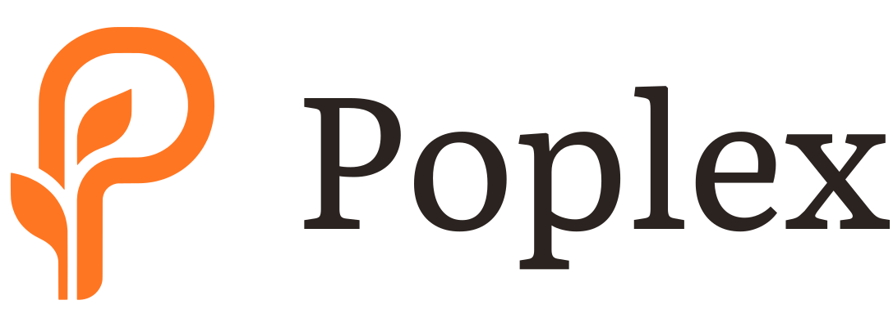

Onboarding S1 · 真实物理像素 1:1 对比 (核准 main 真实基线)
文案：Build your language from work & life. (恢复 main 原版)
您指出得非常对！此前示意图误把 main 基准画偏了。
在实际代码与 iOS 物理视口（iPhone 16 Pro 852pt）中，main 原版的实际位置本身就不是死板的居中
——它通过
onboardingHeroToCTA = 200pt
锚定到底部 Continue，标题顶实际落在
399pt
（占全屏 46.8%）。
下方四台设备均已按
iOS 真实物理数学坐标 1:1 严格还原
，对比清晰呈现：
📏 切换全局同轴对齐标尺线 (显示/隐藏)
标尺色标：
🟢 main 真实原版 (399pt)
｜
🟣 方案 3 (418pt · 微沉 19pt)
｜
🔵 方案 1 (439pt · 下沉 40pt)
｜
🟠 方案 4 (489pt · 深沉 90pt)
对照组 · main 真实基线
真实基准
标题顶距屏顶：
399pt (缩放 343px)
距 Continue：
严格 200pt (缩放 172px)
机制：
200pt 锚定 CTA，上留白弹性吸收
体感：
舒展自然，比纯几何中心略低，呼吸顺畅。

Build your language from work & life.
Not textbooks. Not drills. Just what's happening around you.
Continue
main 原版 399pt
方案 3 · 黄金留白比
比 main 微沉 19pt
标题顶距屏顶：
418pt (缩放 360px)
距 Continue：
约 181pt (缩放 156px)
机制：
上留白 : 下留白 = 1.618 : 1.0
体感：
比 main 略微再往下沉 19pt，极其微妙的从容感。
Build your language from work & life.
Not textbooks. Not drills. Just what's happening around you.
Continue
方案3 418pt (微沉19pt)
方案 1 · 黄金中偏下 55%
比 main 下沉 40pt · 推荐
标题顶距屏顶：
439pt (缩放 378px)
距 Continue：
约 160pt (缩放 138px)
机制：
视觉重心锚定在屏幕 61.8% 黄金分割线
体感：
明确感受到下沉坐底，天顶留白开阔，大气沉稳。
Build your language from work & life.
Not textbooks. Not drills. Just what's happening around you.
Continue
方案1 439pt (下沉40pt)
方案 4 · 深底锚 66.7%
比 main 下沉 90pt
标题顶距屏顶：
489pt (缩放 421px)
距 Continue：
约 110pt (缩放 95px)
机制：
重心压在下三分之二线
体感：
文字极度靠下，下方紧凑对仗，巨大空旷天顶。
Build your language from work & life.
Not textbooks. Not drills. Just what's happening around you.
Continue
方案4 489pt (深沉90pt)